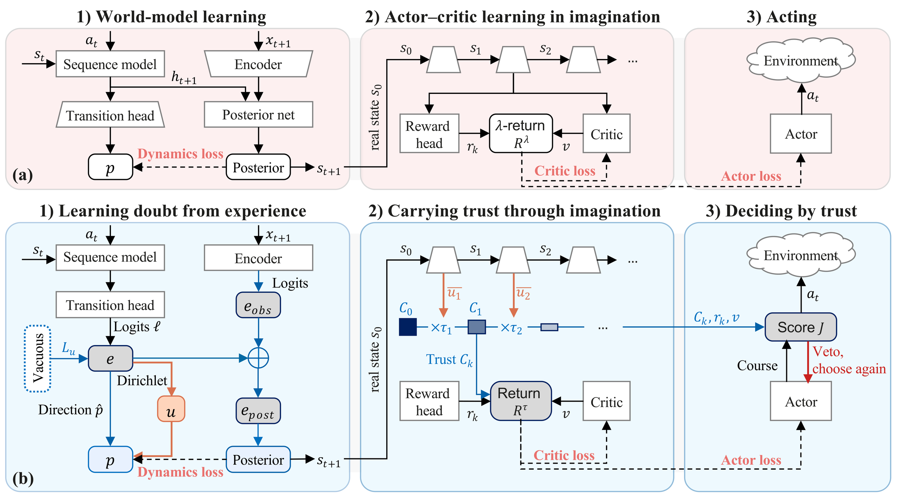
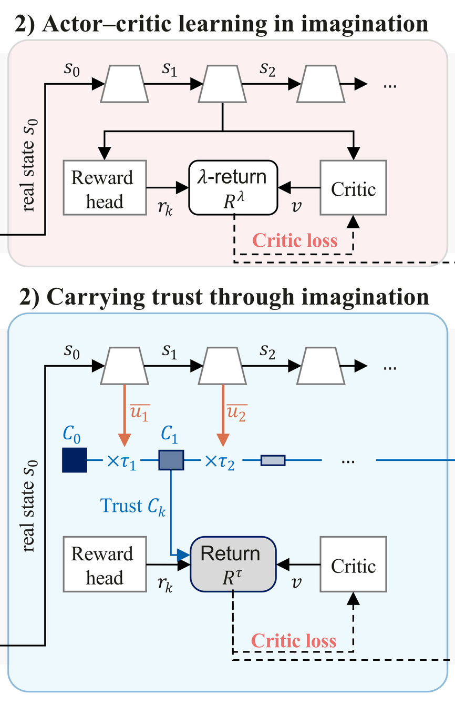

Existing uncertainty estimates for world models are read from the prediction, and therefore stay confident on exactly what the model has never experienced. LucidWM learns doubt from experience and propagates trust through imagination.
1Centre for Innovation and Precision Eye Health, NUSCentre for Innovation and Precision Eye Health, Yong Loo Lin School of Medicine, National University of Singapore
2Department of Ophthalmology, NUSDepartment of Ophthalmology, Yong Loo Lin School of Medicine, National University of Singapore
3KAUSTBioengineering Program, Biomedical Sciences Division (BioMed), King Abdullah University of Science and Technology (KAUST)
4IAIC, A*STARInstitute of Advanced Intelligence and Computing (IAIC), Agency for Science, Technology and Research (A*STAR)
5Singapore Eye Research InstituteSingapore Eye Research Institute, Singapore National Eye Centre
6Duke-NUS Medical SchoolOphthalmology & Visual Sciences Academic Clinical Program (EYE ACP), Duke-NUS Medical School
✉︎Corresponding author
The model doubting its dreams, and acting on it
LucidWMthe comparison named in each captionalarm line, one per curvealarm
How to read the videos
Every readout is read on the same frames and imagined futures and set against its own alarm line, taken on familiar frames of the same run. Maze walks are scripted routes that read the agent's position only, never the model. Base is the same readout on the unmodified model; in the veto clip, the same agent ignoring doubt.
At step 24 the veto fires; ours reaches the armour at step 190, while base circles the room until step 262 and arrives at step 362.
Details
The same weights and seed, twice through a dead end whose deep half was repainted after training: left, base ignores its doubt; right, ours acts on trust. Every wall is where it was, so a policy that learned the map walks in as before. The veto is one rule: when doubt holds above the alarm line for three frames, trust in the course collapses, the agent turns, and its policy resumes. Over its whole walk the entropy of base crosses its own line for a single frame, so the same rule would never have fired. On both altered maps, 143 of 145 vetoes fired inside a changed room, though the agent is never told where the changes are.
Step through both runs
Baseignores its doubt
Oursacts on trust
repainted after training
armour
Before the fall
Eight steps ahead of the fall
The model reports its doubt eight steps before the fall; the entropy of the same prediction raises no alarm.
Details
The doubt stays above its alarm line throughout the fall.
Step through the fall
Twenty falls, twenty alarms
The doubt warns of each of twenty consecutive cheetah falls before it begins; the entropy of the same prediction raises none.
Details
Its alarm fires a median of four steps ahead. Each fall is aligned at its onset; a tile turns red when its alarm is raised.
After observation: the world has changed
Every pixel changed
The walls of one room are repainted, which changes every pixel and nothing else. In the repainted room the lucid doubt rises far above its alarm line again and again.
Details
Inset: the room at training time. In the repainted room the doubt raises its alarm under all 28 rules, four placements of the line by seven required durations, and the base's readout under only 4.
Only the layout changed
A wall is opened onto a room that was sealed off during training; every frame at the opening is made of familiar walls, and the doubt rises each time the agent turns to the opening and falls back as soon as it turns away. Under one alarm rule, set on familiar frames, the LucidWM readout raises an alarm in both rooms and the base’s readout in neither.
Details
We replay the same actions on the training map and read the difference. The doubt reads the structure beneath the pixels. Across 38 checkpoints of training, from 0.1M to 3.8M frames, the doubt ranks the frames of the opened room above the familiar ones at every checkpoint, and the base's readout ranks them below chance at every one.
Into the new room, and into it again
Over 29 walks the doubt raises its alarm inside the room on 25, and the base on none.
Details
Along one walk, the doubt peaks each time the agent enters. Steps outside the room play five times faster.
One pass against three models
On ten further walks through the door, the doubt raises its alarm on eight, the deep and self-ensembles and the entropy on none.
Details
At the cost of one forward pass the doubt ranks the new room above the maze, while the base's latent and deep ensembles, at up to three times the cost, read it as more familiar.
Four bases, four alarms
On all four bases the doubt crosses its line at the new room.
Details
DreamerV3, R2-Dreamer, EMERALD and OC-STORM span recurrent and transformer dynamics, reconstruction-based and reconstruction-free representations, and flat and spatial latent states. Doubt of Ours and Base on each base as the agent approaches the new room.
Nightfall in Crafter
As nightfall darkens Crafter, the doubt climbs over its line within twenty-five steps and peaks above twice it; the base's readout never reaches half of its own.
Before a decision: the dream has drifted
With the actions fed to imagination corrupted, the LucidWM readout rises and leads on every row, while the same formula on the unmodified base moves little or the wrong way: fed nonsense, a model without doubt barely notices.
One pass against twenty
On EMERALD walker and cheetah, with every imagined action corrupted, the doubt rises over threefold from one pass, where MC dropout, Laplace and a snapshot ensemble, at up to twenty passes, fall instead.
Details
Each curve is the lift, the readout under corrupted actions over the readout under the true ones, so 1 is no response.
The worse the actions, the higher the doubt
On OC-STORM the median doubt rises over fivefold on walker and over twofold on Crafter, while the base's readout barely moves.
Details
The actions fed to imagination are replaced by random ones with a growing probability, from 0 to 1 along the axis; each curve is the lift, so 1 is no response. The small frames are decoded imagination.
Leaving the experienced states
Within ten steps the median doubt of LucidWM crosses the 95th percentile of experienced states, and by the end nine in ten sit above it; the base's doubt never moves.
Details
Rollouts of both models drift equally far out of the experienced states. Forty-eight random-action rollouts from real states, forty steps each (grey cloud: experienced states); a rollout turns red while its doubt is above the line.
Imagination beside the world
On Crafter the trust of this rollout drains far faster than that of rollouts started in calm scenes: 0.16 against 0.42 at step 6.
Details
One action sequence drives both the world and the model's imagination. On Crafter, lava appears in the real world from the second step and never in the dream. Left: the imagined walker falls while the real one keeps walking. Right: the trust of this rollout against the median over thirty calm starts.
Doubt falls as experience grows
Learning more, doubting less
Averaged over the 24 imagined steps, the doubt falls at every checkpoint, from 0.181 to 0.096, and the error falls 3.9-fold, while the entropy of the same prediction rises from 0.79 to 1.01.
Details
The same future imagined at six checkpoints of one run, from 48k to 180k environment steps. At one step the doubt falls from 0.194 to 0.093 and the error 24.6-fold, though the two are measured independently: the error by comparing pixels, the doubt from the transition's evidence alone. Past the chaotic horizon the doubt stays the highest of the steps shown at every checkpoint.
Six checkpoints
Checkpoint
Mean of t = 1–24, relative to 48k
Readout
48k
180k
First on every base, and on all 16 rows
Evaluated on four base world models against seventeen uncertainty readouts, LucidWM detects environmental changes and signals uncertainty during action-corrupted rollouts. Uncertainty estimation requires no additional parameters or forward passes.
oursthe other readoutsmoves the wrong way
(A) After observation
AUROC of the readout, frames of the opened room against familiar ones; 0.5 is chance.
(B) Before decision
Lift ρ1/ρ0, the readout under corrupted actions over the readout under true ones; 1 is no response. Log scale.
Table 1 of the paper; means over five seeds.
Table 1
Under each column its cost relative to the base (+c: heads with c times its parameters; m fwd: m forward passes). Means over five seeds; bold is the best in a row; grey numbers move the wrong way, falling as the model leaves its experience; a dash (–) is a readout the base cannot provide. Each test uses eleven of the seventeen readouts; reconstruction and one-step error need the arriving frame, so appear in (A) only.
(A) After observation
base
task
ours1×
base1×
entropy1×
KL1×
recon.1×
1-step1×
RND+.18
RND-e+.38
evid.+.12
latent+.62
self3 fwd
deep3×
DreamerV3
maze
0.77
0.24
0.31
0.24
0.06
0.10
0.39
0.27
0.48
0.33
0.21
0.21
R2-Dreamer
maze
0.83
0.37
0.36
0.52
–
0.50
0.45
0.66
0.30
0.33
0.41
–
EMERALD
maze
0.96
0.72
0.40
0.27
0.05
0.11
0.22
0.20
0.85
0.83
0.26
–
OC-STORM
maze
0.82
0.75
0.75
0.37
0.09
0.16
0.53
0.46
0.57
0.59
0.24
–
(B) Before decision
base
task
ours1×
base1×
entropy1×
max p.1×
Mahal.+.04
kNN+2.4
RND+.13
evid.+.10
latent+.52
MC drop20 fwd
Laplace20 fwd
snap.4 fwd
DreamerV3
walker
1.30
0.85
1.03
1.00
1.06
1.07
0.80
1.00
1.04
1.02
1.01
0.93
cheetah
2.33
0.70
1.14
1.14
1.10
0.95
0.93
1.00
1.04
1.04
0.88
0.94
pendulum
1.33
1.00
1.03
1.04
1.08
1.02
0.96
1.00
0.91
1.07
0.84
0.95
Crafter
1.49
0.84
1.02
0.97
0.88
0.93
1.02
1.00
1.01
0.99
0.92
0.95
R2-Dreamer
walker
3.11
1.19
1.00
1.01
2.45
1.14
1.36
0.99
1.33
1.31
1.37
–
cheetah
2.76
0.99
1.01
1.02
1.17
1.01
1.18
1.00
1.04
1.21
1.01
–
pendulum
1.53
1.02
0.88
0.87
1.01
0.94
1.11
0.99
0.96
0.96
1.11
–
Crafter
1.15
0.81
1.02
1.00
1.05
1.02
1.05
1.00
1.04
1.00
1.14
1.06
EMERALD
walker
3.13
1.10
1.55
1.67
2.08
1.42
1.51
1.00
1.53
0.05
0.06
0.16
cheetah
3.67
1.04
1.42
1.57
2.58
1.56
1.42
1.00
1.72
0.28
0.29
0.25
pendulum
2.06
1.03
1.02
1.03
1.39
1.80
1.87
1.00
1.34
0.62
0.66
0.94
Crafter
1.34
1.01
1.16
1.16
0.89
0.89
1.01
1.00
1.01
0.97
0.97
1.00
OC-STORM
walker
5.62
1.16
2.74
2.14
1.08
0.93
2.48
1.00
4.18
4.37
1.08
–
cheetah
4.30
1.06
2.21
2.08
1.12
0.98
1.47
1.03
2.18
2.95
0.69
–
pendulum
2.29
1.03
1.27
1.14
0.86
0.89
0.98
1.00
0.86
1.01
0.80
–
Crafter
2.59
1.04
2.08
1.79
0.82
0.92
0.85
1.01
1.35
0.61
0.55
0.80
Same prediction, different experience
A state and an action may each be familiar while their combination is unsupported by observed transitions. As a lucid dreamer knows a dream from waking life, LucidWM distinguishes what it predicts from the evidence supporting that prediction.
Same prediction, different experience. Top: a scene and an action never experienced together are predicted as sharply as a pair that was (real frames: at a fall's onset, and 30 steps before it). Bottom: ours reads the Dirichlet behind the input, whose strength and doubt separate the two; the entropy of the output cannot. Bars: each readout over its own alarm line.
Doubt is learned from experience and carried as trust
The transition-head logits parameterise a Dirichlet over the next-state probabilities. The prediction is the direction of the evidence; the doubt is its amount. A standard world model pins two constants; we unfold both into quantities read from the head’s own logits, the doubt of a transition and the trust in a step.

1) Learning doubt from experience. Top: standard; bottom: LucidWM.

2) Carrying trust through imagination. Top: standard; bottom: LucidWM.
3) Deciding by trust. Top: standard; bottom: LucidWM.
(a) A standard world model; (b) LucidWM. Changes in grey and blue, doubt in orange. One rule is applied three times: keep the share of a prediction that experience supports, and hand the rest to a fallback, the uniform distribution, the critic, or zero.
Abstract
World models enable agents to learn and plan in imagination, but predictions beyond their experience can become unreliable and mislead decisions. Existing uncertainty estimates derived from predictions can remain overconfident on unfamiliar state-action pairs. We propose the Lucid World Model (LucidWM), which learns doubt from experience and propagates trust through imagination. By integrating Subjective Logic into categorical latent transitions, LucidWM distinguishes predicted outcomes from their evidential support and assigns each transition a degree of doubt. The complement of this doubt defines transition-level trust, which accumulates multiplicatively along imagined trajectories to reweight returns for policy learning and guide action selection. Uncertainty estimation requires no additional parameters or forward passes. Evaluated on four base world models against seventeen uncertainty readouts, LucidWM detects environmental changes and signals uncertainty during action-corrupted rollouts.
In a controlled navigation case study, acting on trust reduces the number of steps required to reach the goal from 362 to 190. Fifteen demonstration videos show how LucidWM doubts its dreams and acts on that doubt.
BibTeX
@misc{wen2026lucid,
title = {Lucid Dreaming for World Models: Learning to Doubt
Imagination and Decide by Trust},
author = {Wen, Ziqi and Xu, Ting and Wang, Lianyu and Lin, Xian and
Meng, Yanda and Fu, Huazhu and Wang, Meng and Cheng, Ching-Yu},
year = {2026},
eprint = {2609.37156},
archivePrefix = {arXiv},
url = {https://arxiv.org/abs/2609.37156},
primaryClass = {cs.LG}
}